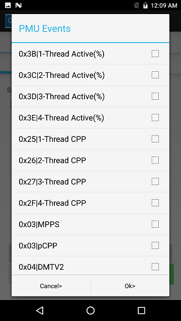
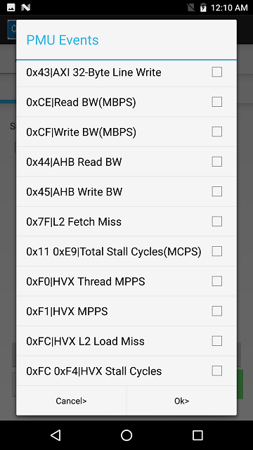

sysMon DSP Profiler V2
Overview
sysMon DSP Profiler is an Android UI application for profiling DSP work load. This UI app uses FastRPC to communicate with SysMon service running on DSP for profiling activities. The Android application can be used to profile services running on DSP to gather information like the clocks voted for, resource usage, load distribution across available hardware threads, load on processor, bus bandwidth metrics and various other profiling metrics useful in measuring performance, debugging performance related issues and in identifying possible optimizations. This document captures steps to setup and use sysMon DSP Profiler and ways to analyze the captured profiling data.
Supported chipsets
8998, SDM660, SDM630, SDM845, SDM710, QCS605, SM8150.
Setup
Install sysMon_DSP_Profiler_V2.apk file from <SDK_DIR>/tools/utils/sysmon/ SDK directory on the device connected to the host machine by running following ADB command.
adb install sysMon_DSP_Profiler_V2.apk
sysMon DSP Profiler V2 Latest Updates
Following screenshot captures the new UI of sysMon DSP Profiler (V2) application where one can select the desired DSP subsystem tab.
This sysMon DSP Profiler UI provides user flexibility to choose from different modes of profiling:
-
DCVS Mode option checked
DSP DCVS (if supported and enabled) algorithm will be active for the profiling duration which can adjust DSP core and bus clocks dynamically.
-
DCVS Mode option un-checked
DSP DCVS (if supported) will be disabled during profiling in this mode.
-
Default Mode option checked
A fixed set of performance metrics (8 PMU events) will be monitored in this mode. By default, sampling period is either 1 or 50 milli-seconds. Profiler generates a packet at the end of every sampling rate window with the performance metrics captured in the window.
User can also provide a desired sampling period in multiples of one milli-second with DCVS mode option unchecked to override sampling period in DSP while the collecting a fixed set of performance metrics (8 PMU events). If DCVS Mode option is checked, a sampling period input of > 0 and < 50 milli-seconds will result in 1 milli-second sampling interval, while for > 50 milli-seconds sampling period input, the sampling interval in DSP will be either 1 or 50 milli-seconds as dictated by DCVS algorithm.
NOTE: The sampling period override option in this mode is not available for 8998.
-
Default Mode option un-checked
With Default Mode option un-checked user has choices to select the desired PMU events to be captured. Click on Configuration button after un-checking the Default Mode.

Following screenshot lists the supported PMU events.
  -
Configuration Settings button
This gets enabled only in user mode and user can select his desired PMU events to be captured. The list of PMU events (depends on the Q6 version of the DSP subsystem) that are open for selection are:
-
0x03 → MPPS
-
0x03 → pCPP
-
0x04 → DMTV2
-
0x07 → DMTV3
-
0x08 → SMT
-
0x2A → IPP
-
0x03 0x2A → MIPS
-
0x7F → L2 Fetch Miss
-
0x11 → IU Stall
-
0x11 0xE9 → Total Stall Cycles(MCPS)
-
0x41 → AXI 32-Byte Line Read
-
-
0x43 → AXI 32-Byte Line Write
-
0xCE → AXI 64-Byte Line Read
-
0xCF → AXI 64-Byte Line Write
-
0x3F → AXI 128-Byte Line Read (Q6 version ≥ v66)
-
-
0x46 → AXI 128-Byte Line Write(Q6 version ≥ v66)
-
0x44 → AHB Read BW
-
0x45 → AHB Write BW
-
0x3B → 1-Thread Active(%)
-
0x3C → 2-Thread Active(%)
-
0x3D → 3-Thread Active(%)
-
0x3E → 4-Thread Active(%)
-
0x25 → 1-Thread CPP
-
0x26 → 2-Thread CPP
-
0x27 → 3-Thread CPP
-
0x2F → 4-Thread CPP
-
0xF0 → HVX Thread MPPS (Q6 version > v60) / 0x118 → HVX Thread MPPS (Q6 version > v65)
-
0xFC → HVX L2 Load Miss / 0x11D → HVX L2 Load Miss (Q6 version > v65)
-
0xFC 0xF4 → HVX Stall Cycles / 0x11D 0x106 → HVX Stall Cycles (Q6 version > v65)
Performance metrics captured are post processed and published on UI continuously with a refresh rate of one second.
-
-
8 PMU Mode option checkbox
8 PMU Mode checkbox gets enabled if Default Mode and DCVS Mode options are un-checked. In Default mode and DCVS modes disabled case, user can select desired PMU events by Configuration Settings. The list of PMU events selected from configuration settings can be profiled in two ways:
-
4 PMU Mode(Default) - 4 constant default PMU events and user configured PMU events scheduled 4 at a time from list of selected events
-
8 PMU Mode - All the 8 PMU events are user configured, scheduled 8 at a time from list of selected events
-
Stats collection
A binary is generated by profiler for post processing to excel sheet for further analysis. In general, one can pull the binary files from sdcard in the below mentioned path (The app displays saved file path on stopping profiler) for the corresponding subsystems.
-
/sdcard/sysmon.bin for ADSP
-
/sdcard/sysmon_CDSP.bin for CDSP
-
/sdcard/sysmon_SDSP.bin for SDSP
Command to pull the profiler output file from device using ADB:
adb pull /sdcard/sysmon<_cdsp/sdsp>.bin <destination directory>\<filename.bin>
Post-processing
Post processing executable can be found at:
Chipset | Parser location in SDK |
8998, SDM660, SDM630 | Windows: <SDK_DIR>/tools/utils/sysmon/parser_win/ Linux: <SDK_DIR>/tools/utils/sysmon/parser_linux/ |
SDM845, SDM710 SDM710, SDM845, QCS605, SM8150 | Windows: <SDK_DIR>/tools/utils/sysmon/parser_win_v2/ Linux: <SDK_DIR>/tools/utils/sysmon/parser_linux_v2/ |
Parser executable usage:
Windows: SysmonParser.exe <Input file name>.bin <Output file name> <ModeType> LInux: SysmonParser <Input file name>.bin <Output file name> <ModeType>
Parameter | Property | Value | Description |
Input file name | Required | Path to the profiler output bin file (including the file name with extension) extracted from the target | |
Output file name | Required | Desired output file path including the filename (without extension) | |
ModeType | Required | default | If Default mode option checked. |
user | If Default mode option is un-checked. |
Example commands:
SysmonParser sysmon.bin SysmonProfStat default SysmonParser.exe sysmon.bin SysmonProfStat user SysmonParser c:\temp\sysmon.bin c:\temp\SysmonProfStat user
Post processing script output file
Output of SysmonParser is an excel sheet saved with the name provided in <Output file name> argument. The excel sheet consists of below worksheets
Summary sheet
This work sheet will have the AVG, MAX and MIN of all the metrics captured during profiling. The overall statistics are grouped under core, bus, L1, L2 and HVX metrics. This is named as Overall summary.
Apart from publishing Overall summary the parser also detects ADSP core power collapse entry and exit and assumes samples between power collapse exit to entry as one test case and displays the summary of each test case.
Under Customized Data user can enter the desired start and end row (from PostProcessed sheet) to generate summary for the selected rows.

PostProcessed sheet
This work sheet will have the post processed data of each PMU event at sampling period configured by user. Apart from the post processed PMU events, this sheet also captures NPA clock votes, ADSPPM static votes, DCVS votes for ADSP core and bus clocks in each profiling window. Also captured are heap statistics of 'GuestOS' and 'UserPDs'.

Analyzing profiling data
Summary sheet
Overall summary section and individual test sections of this sheet helps in understanding the use case performance using the published metrics like MPPS, pCPP, AXI read and write bandwidths, clock votes etc.
MPPS (Million packets per second):
This metric captures the work done by the core for the given use case. Average MPPS of real time use case is constant independent of core clock. Increase in MPPS for non-real time use case for a given clock indicates effective utilization of L1 and L2 cache.
HVX Thread MPPS (Million packets per second):
This metric publishes the packets executed by HVX co-processor in ADSP. MPPS metrics captures both scalar core and HVX core packets. The MPPS executed on the scalar Q6 core can be calculated using:
Q6 scalar MPPS = (MPPS - HVX Thread MPPS)
Effective Q6 frequency (MHz):
This metric captures the actual load on the processor for the given work. Ratio of effective Q6 frequency and NPA core clock frequency can be used to get Q6 usage.
Q6 usage percentage = (Effective Q6 frequency / NPA core clock) * 100
The Q6 usage percentage approaching 100 indicates need for ADSP core to run at higher frequency to avoid any glitches or frame drops. MPPS and pCPP metrics together can be used to decide if the ADSP core clock vote or bus clock vote has to be adjusted in this case.
pCPP (Processor cycles per packet):
pCPP metric captures the average processor cycles taken per packet. Lower the pCPP factor, more is the work done in ADSP for a given core clock frequency. Core stalls due to bus accesses can result in a higher pCPP factor. Increasing the bus clock vote or prefetching data memory prior to actual usage can help in lowering this factor and hence increasing the work done for a given core clock frequency.
IU stall frequency (MHz):
IU stall frequency is derived from measured cycles that the core has stalled on instruction unit cache accesses due to demand misses. Higher the IU stall frequency, higher can be the pCPP factor.
DU stall frequency (MHz):
DU stall frequency is derived from measured cycles that the core has stalled on accessing L1 Data cache lines due to demand misses. Higher the DU stall frequency, higher can be the pCPP factor. DMT (Dynamic Multi Threading) uses DU stalls of stalled thread and schedules other threads for efficient utilization of core clock. DU stall frequency will not fully convey stall of entire processor.
AXI cached read/write bandwidth (MBps):
This metric publishes the AXI bus bandwidth (DDR accesses) generated by read/write access from the core due to a cache line miss in L2. This includes both demand and prefetch misses in L2 cache.
L2 fetch bandwidth (MBps):
Bus bandwidth generated by L2fetch instruction to prefetch data into L2 cache.
Clock votes (MHz):
Core clock captures core clock frequency that ADSP Q6 is running at. Bus clock vote captures overall ADSP vote for bus clock in MHz. The final bus clock frequency (done outside of ADSP) will be based on votes from other subsystems (Application processor, Modem etc.) as well.
Static clock votes (MHz):
Aggregated static votes from all clients for core and bus clocks.
DCVS clock votes (MHz):
DCVS vote for core and bus clocks.
Post processed sheet
This sheet captures PMU metrics along with clock votes and heap statistics per profiling window. Data collected in each sample is extrapolated to per second data and published here. This sheet is especially useful in understanding the instantaneous load on ADSP and also work load distribution in a time frame.
Example plot of Effective Q6 frequency metric over time from PostProcessed sheet:

Example of Q6 load plotted along with core clock frequency and pCPP over time:

Example plot of AXI bandwidth over time:

Example plot of MPPS and pCPP over time:

Command Line Execution
sysMon DSP Profiler can be invoked from command line using the below commands.
The below command will open the sysMon DSP Profiler app with Profiler UI displayed on the screen.
adb shell am start -n com.qualcomm.qti.sysmonappExternal/com.qualcomm.qti.sysmonappExternal.AdspProfiler -e q6 2
-e q6 <DSPproc_value> - Input the required DSP on which you need to run the Profiler. It is a mandatory parameter. Default is ADSP(0).
-
ADSP - 0
-
SDSP - 2
-
CDSP - 3
To Start Profiler:
adb shell am broadcast -a com.qualcomm.qti.sysmonapp.RUN_EXT_FROM_ADB -e startProfiler 1 -e q6 2 -e defaultMode 1 -e samplingPeriod 10 -e dcvsMode 0 -n com.qualcomm.qti.sysmonappExternal/com.qualcomm.qti.sysmonappExternal.BootCompleteReceiverExternal
-e q6 <DSPproc_value> - Input the same DSP value with which you opened the Profiler app (0 - ADSP, 2 - SDSP, 3 - CDSP). -e defaultMode <0/1> - Input 1 if Profiler has to be run in Default Mode or 0 for User Mode(when Default Mode is disabled). By default, Default Mode is enabled. -e samplingPeriod <time_in_msec> - Input the desired samplingPeriod in milli-seconds. By default, it is 1 milli-second in User Mode and combination of 1 and 50 milli-seconds in Default Mode. -e dcvsMode <0/1> - Input 1 to enable DCVS during profiling or 0 to disable. By default, DCVS Mode is enabled when Default Mode is selected and disabled under User Mode. -e pmuMode <0/1> - Input 1 to run profiler in 8 PMU mode. By default, this is 0 and it runs in 4 PMU mode.
This input becomes valid only when profiler is run in user mode and D
To Stop Profiler:
adb shell am broadcast -a com.qualcomm.qti.sysmonapp.RUN_EXT_FROM_ADB -e stopProfiler 1 -e q6 2 -n com.qualcomm.qti.sysmonappExternal/com.qualcomm.qti.sysmonappExternal.BootCompleteReceiverExternal
-e q6 <DSPproc_value> - Input the same DSP value on which you started the Profiler.
The pair of start and stop commands for Profiler can be run any number of times on the given DSP once the sysMon DSP Profiler app is opened.
The below command is to close the sysMon DSP Profiler app finally.
adb shell am force-stop com.qualcomm.qti.sysmonappExternal
To run Profiler on different DSP, one has to close the app and re-open it with different DSP value and run start and stop commands with the corresponding DSP value.
CDSP Benchmarking Overview
CDSP Benchmarking is a feature in sysMon DSP Profiler for studying the performance of common image processing APIs on DSP for the given duration and their performance metrics are captured.
Supported chipsets
All HVX based CDSP subsystems from SDM660.
SDM660, SDM845, SDM710, QCS605, SM8150
Usage
Following screenshot captures the UI of CDSP Benchmark. The chipset is auto-detected and CDSP Benchmark tab appears under the appropriate Q6 tab.
The user has choices to select
-
desired API
-
screen resolution
-
duration of execution
-
FPS
-
Power Level
-
DCVS Mode
-
Fix Power Level
-
HVX Units
-
Profiler
-
Functions:
Function Test | Description |
conv3x3 | 3x3 Convolution of image |
dilate3x3 | 3x3 Dilation filter of image |
dilate5x5 | 5x5 Dilation filter of image |
gaussian7x7 | 7x7 Gaussian filter of image |
integrate | Performs image Integration to increase the light in an image |
epsilon | Epsilon filter of image |
bilateral | Bilateral filter of image |
fast9 | Fast 9 version of Fast feature detector of image |
bilateral_vtcm | Bilateral filter of image with VTCM and scatter/gather |
sobel3x3 | 3x3 Sobel filter of image |
fft1024 | 2D 1024x1024 FFT (8-bit real input, 32-bit fixed-point Q29.3 complex output; each row is 1024 reals followed by 1024 imaginary) |
fft1024_vtcm | 2D 1024x1024 FFT using VTCM as scratch buffer(8-bit real input, 32-bit fixed-point Q29.3 complex output; each row is 1024 reals followed by 1024 imaginary) |
histogram | Contrast adjustment using the image's histogram |
ncc8x8 | Normalized cross-correlation of two images. To check degree to which two images are similar. |
Note: Functions listed after fast9 in the above table are available only from SDM845/SDM710.
Screen Resolution:
The functions can run on an image with the user specified image resolution. The supported resolutions are 1080p, 2160p, 720p, 480p and 16MP. Default is 1080p.
FPS:
Frame per second can be chosen among 30, 60, 15 and 10. Default is 30 fps. The function is called in the loop on the given image buffer at the rate of given fps.
Total Time:
User can specify duration of execution in seconds. The function will execute in loop for the specified time duration at the rate of given fps and displays the average of actual execution time on DSP. Default is 10 seconds
Power Level:
The testcase can run in the user specified power level among Turbo, Nominal Plus, Nominal, SVS Plus, SVS, SVS2 and MINSVS. Default is Turbo.
Fix Power Level:
This option is applicable only for fullsuite. If it's enabled, all the supported benchmarks run only at the selected power level. Else each benchmark will run in all the listed power levels.
Power Mode:
The testcase can run either in Perf mode or Power mode. Perf mode will execute the API back to back with no sleep between the successive loop calls whereas Power mode will execute the API at the rate of given fps. Perf mode is irrespective of the input fps.
DCVS Mode:
DSP DCVS (if enabled) logic can adjust the DSP core and bus clocks dynamically during the execution of the testcase.
HVX Units:
User can select the number of HVX units to be used for the benchmark to run from min of 1 to max 4. Benchmarks such as integrate, fft1024 and fft1024_vtcm supports max of 2 HVX units. Supported only from SM8150.
Profiler:
Profiler option (enabled by default) will capture profiling metrics for the benchmark kernel when executed via Execute Command. User can uncheck this option if profiling information is not needed.
After selecting the required parameters, Click on Execute Command button to start the test case.
Full Suite:
Clicking on Full Suite button runs all the APIs on the all the possible power levels for the given fps and screen resolution. Each API will run for the given duration.
Analyzing output data
Once the testcase is done, the UI displays the result of execution. DSP profiler also runs in default mode in parallel with the testcase and displays the PMU data.
The screenshot shows the profiler output of the testcase.
Also, The result of the testcase can be pulled from /sdcard/CDSP_Benchmark.csv for future reference.
Following screenshot shows the result of Full Suite run on 1080p with 30fps.

DSP Clock(MHz):
This captures core clock frequency of DSP Q6 during the testcase.
RPC loops:
RPC loops is the loop count that decides the number of times the API is executed at the rate of given fps. RPC loops is calculated from user specified total time and FPS.
RPC loops = total time / time per frame = 1 sec * 1000 / 33.333 ms ~= 30
Total Time:
This displays the actual time for the completion of the testcase.
DSP time(uSec):
This displays the total time for the API to run on DSP excluding the RPC latency.
DSP time per iteration(uSec):
This displays the average time on DSP per iteration excluding the RPC latency.
RPC overhead per call(uSec):
This displays the average RPC latency on API call to DSP.
Average NCC ROI Search Time(uSec):
The time taken to find the region of interest that limits the search area. Applicable only for ncc8x8 benchmark.
Copyright © 2018 Qualcomm Technologies Inc. All rights reserved.